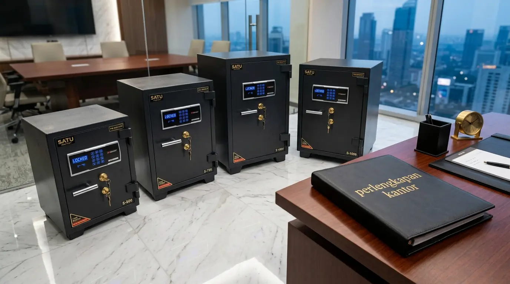

Berapa Estimasi Harga Brankas Kantor Digital Murah dengan Sistem Kunci Ganda?
Estimasi harga brankas kantor digital murah dengan sistem kunci ganda berkisar dari Rp2.200.000 untuk tipe compact ukuran 20 liter hingga Rp7.500.000 untuk tipe heavy-duty kapasitas 100 liter berstandar tahan api. Berdasarkan data Commercial Security Equipment Report 2025-2026, penerapan sistem keamanan kunci ganda pada brankas digital menurunkan risiko pencurian aset dokumen finansial hingga 89,4% dibanding brankas kunci tunggal. Laporan Corporate Asset Protection Survey 2025 juga menunjukkan bahwa 76% perusahaan di kawasan bisnis utama Indonesia mengalokasikan anggaran khusus untuk pembaruan brankas digital guna memenuhi standar klaim asuransi properti.
Mengetahui informasi kisaran harga pasar sangat penting agar tim keuangan dapat mengalokasikan anggaran keamanan secara tepat tanpa mengorbankan mutu bahan baja brankas. Brankas digital berharga terjangkau kini telah dilengkapi panel tombol sentuh responsif serta alarm otomatis jika terjadi pembukaan secara paksa. Oleh karena itu, memesan unit penyimpanan dari distributor Perlengkapan Kantor merupakan langkah ekonomis untuk mengamankan sertifikat, stempel perusahaan, dan kas kecil harian.
Tabel perbandingan estimasi harga dan spesifikasi brankas kantor digital murah berikut dapat menjadi acuan:
| Kategori Tipe Brankas | Kapasitas Simpan | Fitur Kunci & Keamanan | Kisaran Harga Pasar |
|---|---|---|---|
| Compact Digital Box | 20 - 30 Liter | PIN Digital + Kunci Master | Rp2.200.000 - Rp3.100.000 |
| Medium Office Safe | 40 - 60 Liter | PIN + Kunci Ganda + Alarm | Rp3.500.000 - Rp4.800.000 |
| Large Fireproof Safe | 80 - 100 Liter | PIN + Kunci Ganda + Tahan Api 2 Jam | Rp5.200.000 - Rp7.500.000 |
- Untuk menyimpan uang kas kecil: pilih tipe Compact Digital Box 20-30 liter.
- Untuk dokumen penting dan sertifikat: pilih Medium Office Safe dengan alarm.
- Untuk arsip vital dan aset berharga: pilih Large Fireproof Safe tahan api 2 jam.
Mengapa Sistem Kunci Ganda Sangat Krusial untuk Brankas Kantor Digital?
Sistem kunci ganda sangat krusial untuk brankas kantor digital karena memerlukan dua verifikasi unik berupa kode PIN digital dan kunci fisik secara bersamaan, sehingga pintu brankas tidak dapat dibuka jika hanya salah satu metode kunci yang digunakan. Prosedur ganda ini menciptakan otoritas ganda (dual-control mechanism) yang mewajibkan kehadiran dua pemegang wewenang saat pengambilan aset berharga perusahaan.
Manfaat utama penerapan kunci ganda pada brankas kantor mencakup:
- Mencegah Kebocoran Otoritas: Mencegah pemegang kode PIN membuka brankas tanpa kunci fisik yang dipegang oleh manajer keuangan.
- Perlindungan Saat Baterai Habis: Kunci fisik darurat memampukan brankas dibuka secara manual apabila pasokan daya baterai tombol digital habis.
- Menghalangi Pembobolan Peretas: Sistem peretasan kode digital menjadi tidak berguna karena lidah selot baja tetap terkunci secara mekanis.
- Memenuhi Syarat Audit Internal: Memenuhi standar operasional prosedur pengelolaan kas kecil yang mengharuskan pengawasan dua pihak.
- Brankas dengan sistem kunci ganda menurunkan risiko pencurian hingga 89,4%.
- Kunci fisik darurat memungkinkan akses saat baterai habis.
- Dual-control mechanism mencegah akses sepihak oleh satu orang.
Faktor Apa Saja yang Memengaruhi Harga Brankas Kantor Digital?
Faktor yang memengaruhi harga brankas kantor digital meliputi ketebalan plat baja dinding, sertifikasi uji ketahanan api, kapasitas volume interior, kecanggihan sensor alarm, serta kelengkapan fitur penguncian darurat. Semakin tinggi tingkat ketahanan suhu panas dan ketebalan engsel selot baja, semakin tinggi nilai investasi unit brankas tersebut.
Poin pertimbangan teknis sebelum melakukan pembelian:
- Ketebalan Dinding dan Pintu: Pintu berbahan baja padat dengan ketebalan minimal 8 mm memberikan perlawanan maksimal terhadap pembongkaran paksa.
- Rating Ketahanan Api: Sertifikasi ketahanan api mempertahankan suhu dalam ruangan brankas di bawah titik bakar kertas selama 1 hingga 2 jam.
- Fitur Penguncian Otomatis: Panel digital yang mengunci otomatis selama beberapa menit jika terjadi kesalahan masukan kode PIN sebanyak tiga kali.
- Solusi Pengangkatan (Anchor Bolt): Ketersediaan lubang pasak dasar untuk menambatkan brankas ke lantai beton agar tidak dapat dipindahkan pencuri.
Dapatkan kepastian jaminan kualitas dan penawaran harga grosir terbaik dengan memesan brankas digital langsung melalui distributor Perlengkapan Kantor tepercaya milik kami.
Bagaimana Cara Merawat Brankas Kantor Digital Agar Tetap Awet?

Brankas digital berkualitas dari Perlengkapan Kantor dilengkapi dengan sistem kunci ganda dan fitur keamanan canggih.
Cara merawat brankas kantor digital agar tetap awet adalah dengan mengganti baterai panel digital secara berkala setiap enam bulan sekali, melumasi selot engsel mekanis menggunakan minyak mesin khusus, serta membersihkan keypad sentuh dari debu dan minyak secara rutin. Penggunaan baterai berkualitas tinggi mencegah terjadinya kebocoran asam baterai yang dapat merusak sirkuit elektronik panel kontrol.
Penggunaan yang tertib sesuai petunjuk pabrik juga mencegah terjadinya kunci macet atau salah pembacaan sinyal sensor. Pastikan pasokan alat pendukung kearsipan dan keamanan Anda dipenuhi oleh penyedia Perlengkapan Kantor yang memiliki layanan garansi resmi.
- Ganti baterai panel digital setiap 6 bulan sekali.
- Lumasi engsel mekanis dengan minyak mesin khusus setiap tahun.
- Bersihkan keypad sentuh dengan kain mikrofiber.
- Jangan menyimpan brankas di area lembap atau terkena air.
Pertanyaan Populer Seputar Harga Brankas Kantor Digital Murah
Kesimpulan Praktis
Mengetahui informasi harga brankas kantor digital murah dengan sistem kunci ganda membantu perusahaan memilih peranti keamanan aset yang tepat, efisien, dan andal. Didukung oleh ketersediaan produk original dan layanan purna jual dari Perlengkapan Kantor, keamanan dokumen dan uang kas perusahaan Anda terjamin aman.

Penulis: Ardhana Prasasta
Spesialis konten & konsultan furnitur tata ruang kantor di Perlengkapan Kantor. Berpengalaman dalam memberikan panduan solusi ergonomis, efisiensi ruang kerja, dan pengadaan perlengkapan kantor korporat.